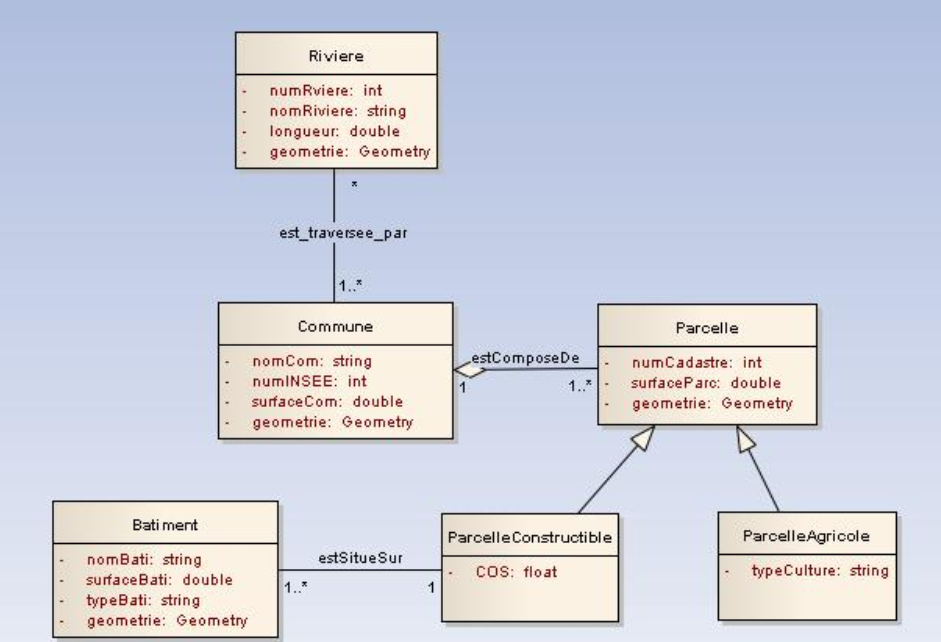
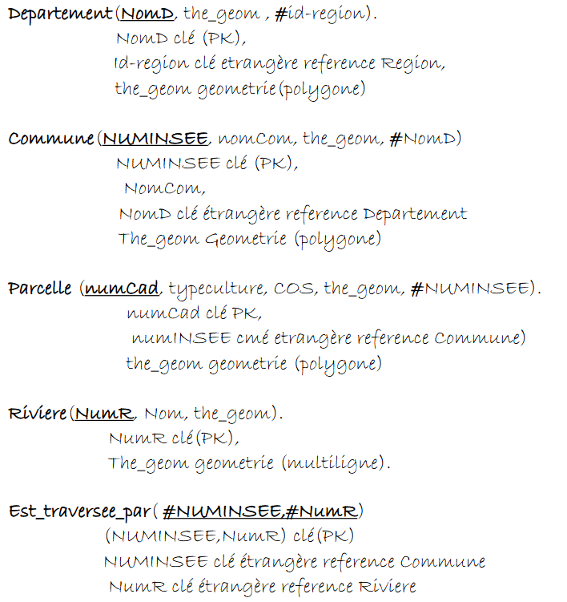

Conception et modélisation de bases de données géographiques relationnelles. Schémas conceptuels UML, modèles relationnels avec clés primaires et étrangères, et requêtes SQL spatiales avec PostGIS.
Le schéma conceptuel UML représente les entités géographiques et leurs relations. Chaque entité possède un attribut geometrie: Geometry qui stocke la donnée spatiale (point, ligne, polygone) dans PostGIS.

Fig. 1 — Schéma conceptuel UML : entités Rivière, Commune, Parcelle, Bâtiment avec héritage et associations spatiales
Le modèle relationnel traduit le schéma conceptuel en tables SQL. Les clés primaires (PK) identifient chaque enregistrement de façon unique, les clés étrangères (FK) assurent l'intégrité référentielle entre les tables.

Fig. 2 — Modèle logique des données : tables, clés primaires, clés étrangères et géométries
Exemples de requêtes SQL utilisant les fonctions spatiales de PostGIS pour interroger et analyser les données géographiques.
Communes traversées par une rivière spécifique (jointure spatiale avec ST_Intersects)
SELECT DISTINCT(c.nomCom) FROM Commune c, Riviere r WHERE ST_INTERSECTS(c.the_geom, r.the_geom) AND r.Nom = 'Le Lez';
Communes d'un département donné (jointure attributaire)
SELECT c.NomCom FROM Departement d, Commune c WHERE d.NomD = 'Languedoc-R';
Parcelles viticoles d'une commune (filtre attributaire)
SELECT numCad FROM Parcelle WHERE NomCom = 'PradesLeLez' AND typeculture = 'viticole';
Communes de l'Hérault voisines de Saint-Mathieu (ST_Touches = partage une frontière)
SELECT c2.NUMINSEE FROM Commune c1, Commune c2, Departement d WHERE d.nomD = 'Herault' AND c1.NomCom = 'SaintMathieu' AND ST_TOUCHES(c1.the_geom, c2.the_geom); -- partage une frontière commune
Hébergé sur Codeberg • 100% Open Source
← Retour au portfolio